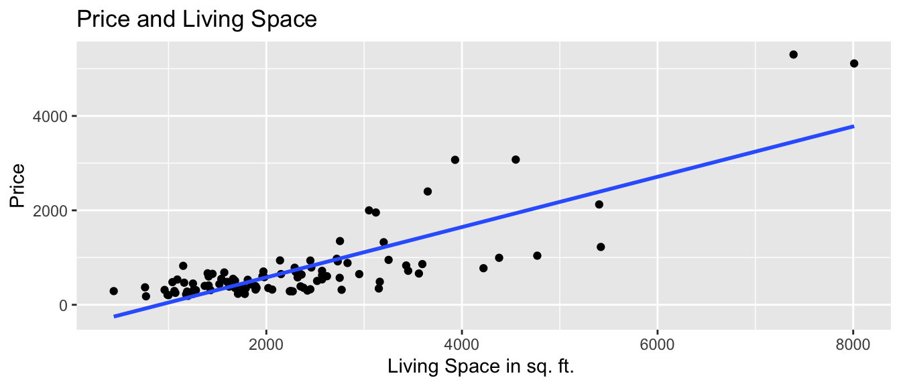
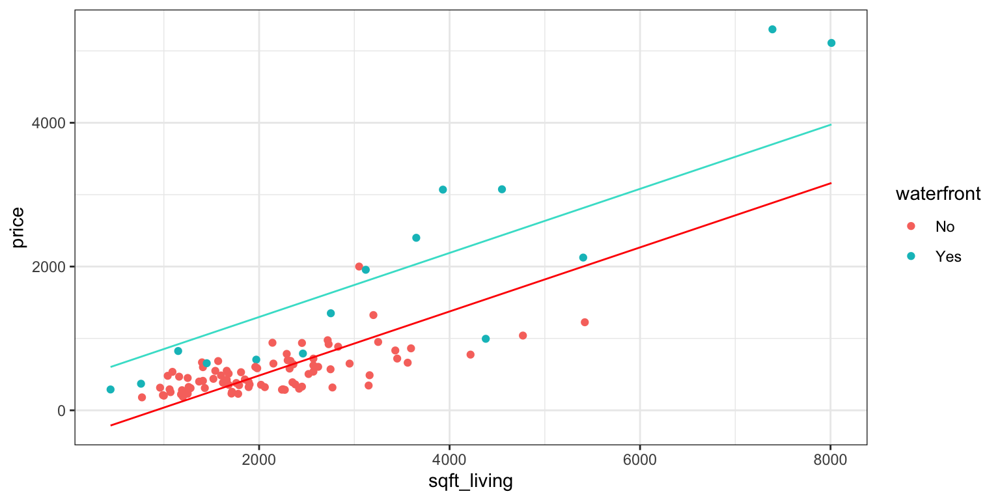

Chapter 1 Exploratory Data Analysis
Learning Outcomes:
- Interpret graphical summaries of data, including boxplots, histograms, violin plots, density plots, scatterplots, and correlation plots.
- Read data from a .csv file into R.
- Preview data in R.
- Create graphical summaries of data using R.
- Calculate summary statistics for entire datasets and grouped summaries.
- Create reproducible documents using R Markdown.
1.1 Exploring Data Visualizations
1.1.1 COVID-19 Data
The following data were contained in a UK technical report on the Delta Variant on August 2, 2021
| Vaccination Status | Deaths | Total Cases | Fatality Rate |
|---|---|---|---|
| Fully Vax | 402 | 47,008 | 0.86% |
| Unvax | 253 | 151,054 | 0.17 % |

One explanation would be that vaccines don’t work, and even cause harm.
Can you think of another explanation?
1.1.2 Breakdown by Age < 50
We break down the cases based on whether the patient was older or younger than 50.
Under 50
| Vaccination Status | Deaths | Total Cases | Fatality Rate |
|---|---|---|---|
| Fully Vax | 13 | 25,536 | 0.05% |
| Unvax | 48 | 147, 612 | 0.03 % |
50 or Older
| Vaccination Status | Deaths | Total Cases | Fatality Rate |
|---|---|---|---|
| Fully Vax | 389 | 21,472 | 1.81% |
| Unvax | 205 | 3,440 | 5.96 % |
ggplot(data=Covid_Data, aes(x=Vac_Status, fill=Outcome)) + geom_bar(position="fill") + facet_wrap(~Age)
Before accounting for age, vaccinated people appear to be 5 times MORE likely to die from covid than unvaccinated people.
After accounting for age, vaccinated young people appear to be about 1.5 times more likely to die from covid (though death rates are very low) overall, and vaccinated older people appear to be more than 3 times LESS likely.
1.1.3 Vaccination by Age Breakdown

Since almost all of the unvaccinated people were from the lower risk category, the death rate among unvaccinated people appears lower.
We should account for age when comparing survival rates.
1.1.4 Simpson’s Paradox
Simpson’s Paradox refers to a situation where an apparent trend either disappears or reverses when one or more additional variables are accounted for. These additional variables are called confounding variables.
In this situation, age is a counfouding variable. Older people are more likely to be vaccinated, and also more likely to die of covid (regardless of vaccination status), thus it appears that vaccinated people are more likely to die from covid, unless we account for age.
When we build statistical models, it will be important to account for potential confounding variables in our data, otherwise a model will give misleading results.
Final note: Subsequent data has shown that among people under 50, vaccinated people also had lower death rates (though death rates remained very low for both vaccinated and unvaccinated people). The slightly higher death rate for vaccinated people under 50, seen in these early data, is likely due to young people with other risk conditions being vaccinated first.
1.1.5 Exploring Diamond Prices
The following data come from a dataset with information on over 53,940 diamonds. We’ll explore the relationship between price (in $ US) and quality of the cut of the diamond (ideal, premium, very good, good, fair."
Consider the following plots:
ggplot(data=diamonds, aes(x=price, y=cut, fill=cut)) +
geom_boxplot(outlier.size=0.01, outlier.alpha = 0.1) +
stat_summary(fun=mean, geom="point", shape=4, color="red", size=3) + ggtitle("Price by Quality of Cut")
Diamonds come in different carat sizes, so we should consider information about that as well.
We examine a histogram, displaying the number of diamonds with each cut, and carat size.
ggplot(data=diamonds, aes(x=carat, fill=cut)) + geom_histogram() + ggtitle("Diamonds by Carat Size and Cut Quality") The table shows the number of diamonds of each cut, as well as the average carat size and price of each diamond.
The table shows the number of diamonds of each cut, as well as the average carat size and price of each diamond.
## # A tibble: 5 × 4
## cut N Avg_carat Avg_price
## <ord> <int> <dbl> <dbl>
## 1 Fair 1610 1.05 4359.
## 2 Good 4906 0.849 3929.
## 3 Very Good 12082 0.806 3982.
## 4 Premium 13791 0.892 4584.
## 5 Ideal 21551 0.703 3458.Finally, we use a scatterplot to visualize cut, price, and carat size.
ggplot(data=diamonds, aes(x=carat, y=price, color=cut)) + geom_point() + ggtitle("Price by Carat Size and Cut")
Question:
How is Simpson’s paradox present in the diamonds data? What is the confounding variable? What conclusion should we draw about the relationship between the price of a diamond and the quality of the cut?
1.2 Exploratory Analysis in R
This section provides examples of how to read data into R, create graphics, like those in the previous section, and calculate summary statistics.
We’ll work with data on movies released in Hollywood between 2012 and 2018.
1.2.1 Loading the Data
We’ll begin by loading the tidyverse package, which can be used to create professional graphics, and wrangle (or manipulate) data into forms that are informative and easy to work with.
Next, we read in the data itself, from the website where it is stored.
1.2.2 Previewing the Data
head()
The head() function displays the first 5 rows of the dataset.
## # A tibble: 6 × 15
## Movie LeadStudio RottenTomatoes AudienceScore Genre TheatersOpenWeek
## <chr> <chr> <dbl> <dbl> <chr> <dbl>
## 1 2016: Obama's … Rocky Mou… 26 73 Docu… 1
## 2 21 Jump Street Sony Pict… 85 82 Come… 3121
## 3 A Late Quartet Entertain… 76 71 Drama 9
## 4 A Royal Affair Magnolia … 90 82 Drama 7
## 5 Abraham Lincol… Twentieth… 35 51 Horr… 3108
## 6 Act of Valor Relativit… 27 72 Acti… 3039
## # … with 9 more variables: OpeningWeekend <dbl>, BOAvgOpenWeekend <dbl>,
## # Budget <dbl>, DomesticGross <dbl>, WorldGross <dbl>, ForeignGross <dbl>,
## # Profitability <dbl>, OpenProfit <dbl>, Year <dbl>The rows of the dataset are called observations. In this case, the observations are the movies.
The columns of the dataset, which contain information about the movies, are called variables.
glimpse
The glimpse() command shows the number of observations (rows), and the number of variables, (columns). We also see the name of each variable and its type. Variable types include
Categorical variables, which take on groups or categories, rather than numeric values. In R, these might be coded as logical
<logi>, character<chr>, factor<fct>and ordered factor<ord>.Quantitative variables, which take on meaningful numeric values. These include numeric
<num>, integer<int>, and double<dbl>.
## Rows: 1,295
## Columns: 15
## $ Movie <chr> "2016: Obama's America", "21 Jump Street", "A Late Qu…
## $ LeadStudio <chr> "Rocky Mountain Pictures", "Sony Pictures Releasing",…
## $ RottenTomatoes <dbl> 26, 85, 76, 90, 35, 27, 91, 56, 11, 44, 93, 63, 87, 9…
## $ AudienceScore <dbl> 73, 82, 71, 82, 51, 72, 62, 47, 47, 63, 82, 51, 63, 9…
## $ Genre <chr> "Documentary", "Comedy", "Drama", "Drama", "Horror", …
## $ TheatersOpenWeek <dbl> 1, 3121, 9, 7, 3108, 3039, 132, 245, 2539, 3192, 3, 1…
## $ OpeningWeekend <dbl> 0.03, 36.30, 0.08, 0.04, 16.31, 24.48, 1.14, 0.70, 11…
## $ BOAvgOpenWeekend <dbl> 30000, 11631, 8889, 5714, 5248, 8055, 8636, 2857, 449…
## $ Budget <dbl> 3.0, 42.0, NA, NA, 68.0, 12.0, NA, 7.5, 35.0, 50.0, 1…
## $ DomesticGross <dbl> 33.35, 138.45, 1.56, 1.55, 37.52, 70.01, 1.99, 3.01, …
## $ WorldGross <dbl> 33.35, 202.81, 6.30, 7.60, 137.49, 82.50, 3.59, 8.54,…
## $ ForeignGross <dbl> 0.00, 64.36, 4.74, 6.05, 99.97, 12.49, 1.60, 5.53, 9.…
## $ Profitability <dbl> 1334.00, 482.88, NA, NA, 202.19, 687.50, NA, 113.87, …
## $ OpenProfit <dbl> 1.20, 86.43, NA, NA, 23.99, 204.00, NA, 9.33, 32.57, …
## $ Year <dbl> 2012, 2012, 2012, 2012, 2012, 2012, 2012, 2012, 2012,…There are 1,295 movies in the dataset, and 15 variables for each film.
summary
summary displays the mean, minimum, first quartile, median, third quartile, and maximum for each numeric variable.
## Movie LeadStudio RottenTomatoes AudienceScore
## Length:1295 Length:1295 Min. : 0.00 Min. :10.00
## Class :character Class :character 1st Qu.:33.00 1st Qu.:49.00
## Mode :character Mode :character Median :61.00 Median :64.00
## Mean :57.58 Mean :62.18
## 3rd Qu.:84.00 3rd Qu.:77.00
## Max. :99.00 Max. :99.00
## NA's :6
## Genre TheatersOpenWeek OpeningWeekend BOAvgOpenWeekend
## Length:1295 Min. : 1.0 Min. : 0.020 Min. : 204
## Class :character 1st Qu.: 152.5 1st Qu.: 0.845 1st Qu.: 3482
## Mode :character Median :2459.0 Median : 7.600 Median : 6586
## Mean :2008.0 Mean : 17.541 Mean : 13400
## 3rd Qu.:3213.5 3rd Qu.: 20.810 3rd Qu.: 14534
## Max. :4529.0 Max. :257.700 Max. :240000
##
## Budget DomesticGross WorldGross ForeignGross
## Min. : 0.90 Min. : 1.02 Min. : 0.74 Min. : -0.76
## 1st Qu.: 12.00 1st Qu.: 6.40 1st Qu.: 13.09 1st Qu.: 3.91
## Median : 30.00 Median : 26.46 Median : 50.37 Median : 21.58
## Mean : 51.38 Mean : 58.16 Mean : 147.01 Mean : 88.84
## 3rd Qu.: 65.00 3rd Qu.: 66.44 3rd Qu.: 160.38 3rd Qu.: 89.75
## Max. :365.00 Max. :936.66 Max. :2068.22 Max. :1369.54
## NA's :239
## Profitability OpenProfit Year
## Min. : 2.3 Min. : 0.05 Min. :2012
## 1st Qu.: 139.1 1st Qu.: 12.87 1st Qu.:2013
## Median : 268.9 Median : 31.77 Median :2015
## Mean : 435.7 Mean : 64.50 Mean :2015
## 3rd Qu.: 483.0 3rd Qu.: 62.59 3rd Qu.:2017
## Max. :10176.0 Max. :3373.00 Max. :2018
## NA's :239 NA's :239Notice that 239 films have missing information on some of the variables, recorded as NA’s.
1.2.3 Adding a New Variable
We can use the mutate() function to create a new variable based on variables already in the dataset.
In the data description, the variable Profitability is defined as WorldGross as a percentage of Budget. Thus, films for which Profitability exceeds 100 were profitable.
We create a variable to tell whether or not a film was profitable. Note that in R, a variable defined as a condition, such as Profitability>100 will return values of either TRUE or FALSE.
## Mode FALSE TRUE NA's
## logical 170 886 2391.2.4 Selecting Columns
If the dataset contains a large number of variables, narrow down to the ones you are interested in working with. This can be done with the select() command. If there are not very many variables to begin with, or you are interested in all of them, then you may skip this step.
Let’s narrow the dataset down to the variables Movie, RottenTomatoes, AudienceScore, Genre, WorldGross, Budget, “Profitable”, and Year.
1.2.5 Filtering by Row
The filter() command narrows a dataset down to rows that meet specified conditions.
Filtering by a Categorical Variable
Let’s filter the data to only include action movies, comedies, dramas, and horror movies.
We’ll also keep only those films whose budget was listed, excluding the 239 NA’s. The command !is.na() returns only values that are not NA’s.
MoviesSubset1 <- MoviesSubset %>%
filter(Genre %in% c("Action", "Comedy", "Drama", "Horror")) %>% filter(!is.na(Budget))In R, the ! operator means “not”.
## Rows: 679
## Columns: 8
## $ Movie <chr> "21 Jump Street", "Abraham Lincoln: Vampire Hunter", "A…
## $ RottenTomatoes <dbl> 85, 35, 27, 56, 44, 93, 63, 86, 34, 86, 74, 41, 71, 32,…
## $ AudienceScore <dbl> 82, 51, 72, 47, 63, 82, 51, 86, 55, 76, 64, 35, 62, 70,…
## $ Genre <chr> "Comedy", "Horror", "Action", "Drama", "Comedy", "Drama…
## $ WorldGross <dbl> 202.81, 137.49, 82.50, 8.54, 236.80, 36.79, 71.00, 36.7…
## $ Budget <dbl> 42.0, 68.0, 12.0, 7.5, 50.0, 10.0, 49.0, 4.6, 220.0, 1.…
## $ Profitable <lgl> TRUE, TRUE, TRUE, TRUE, TRUE, TRUE, TRUE, TRUE, TRUE, T…
## $ Year <dbl> 2012, 2012, 2012, 2012, 2012, 2012, 2012, 2012, 2012, 2…Filtering by a Quantitative Variable
Let’s filter the data to only include films whose world gross exceeds 100 million dollars.
Now, let’s preview the data again.
## Rows: 444
## Columns: 8
## $ Movie <chr> "21 Jump Street", "Abraham Lincoln: Vampire Hunter", "A…
## $ RottenTomatoes <dbl> 85, 35, 44, 96, 34, 78, 85, 66, 38, 88, 78, 17, 74, 45,…
## $ AudienceScore <dbl> 82, 51, 63, 90, 55, 76, 71, 67, 46, 92, 75, 32, 56, 72,…
## $ Genre <chr> "Comedy", "Horror", "Comedy", "Thriller", "Action", "Ad…
## $ WorldGross <dbl> 202.81, 137.49, 236.80, 227.14, 313.48, 554.61, 123.68,…
## $ Budget <dbl> 42.0, 68.0, 50.0, 45.0, 220.0, 185.0, 12.0, 102.0, 150.…
## $ Profitable <lgl> TRUE, TRUE, TRUE, TRUE, TRUE, TRUE, TRUE, TRUE, TRUE, T…
## $ Year <dbl> 2012, 2012, 2012, 2012, 2012, 2012, 2012, 2012, 2012, 2…We’ll use MoviesSubset1 from this point forward.
1.2.6 Histogram
Next, we’ll create graphics to help us visualize the distributions and relationships between variables. We’ll use the ggplot() function, which is part of the tidyverse package.
Histograms are useful for displaying the distribution of a single quantitative variable
General Template for Histogram
ggplot(data=DatasetName, aes(x=VariableName)) +
geom_histogram(fill="colorchoice", color="colorchoice") +
ggtitle("Plot Title") +
xlab("x-axis label") +
ylab("y-axis label")Histogram of Audience Scores
ggplot(data=MoviesSubset1, aes(x=AudienceScore)) +
geom_histogram(fill="lightblue", color="white") +
ggtitle("Distribution of Audience Scores") +
xlab("Audience Score") +
ylab("Frequency")
1.2.7 Density Plots
Density plots show the distribution for a quantitative variable like audience score. Scores can be compared across categories, like genre.
General Template for Density Plot
ggplot(data=DatasetName, aes(x=QuantitativeVariable,
color=CategoricalVariable, fill=CategoricalVariable)) +
geom_density(alpha=0.2) +
ggtitle("Plot Title") +
xlab("Axis Label") +
ylab("Frequency") alpha, ranging from 0 to 1 dictates transparency.
Density Plot of Audience Scores
ggplot(data=MoviesSubset1, aes(x=AudienceScore, color=Genre, fill=Genre)) +
geom_density(alpha=0.2) +
ggtitle("Distribution of Audience Scores") +
xlab("Audience Score") +
ylab("Frequency") 
1.2.8 Boxplot
Boxplots can be used to compare a quantitative variable with a categorical variable
General Template for Boxplot
ggplot(data=DatasetName, aes(x=CategoricalVariable,
y=QuantitativeVariable)) +
geom_boxplot() +
ggtitle("Plot Title") +
xlab("Variable Name") + ylab("Variable Name") You can make the plot horizontal by adding + coordflip(). You can turn the axis text vertical by adding theme(axis.text.x = element_text(angle = 90)).
Boxplot Comparing Scores for Genres
1.2.9 Violin Plot
Violin plots are an alternative to boxplots. The width of the violin tells us the density of observations in a given range.
General Template for Violin Plot
ggplot(data=DatasetName, aes(x=CategoricalVariable, y=QuantitativeVariable,
fill=CategoricalVariable)) +
geom_violin() +
ggtitle("Plot Title") +
xlab("Variable Name") + ylab("Variable Name") Violin Plot Comparing Scores for Genres
ggplot(data=MoviesSubset1, aes(x=Genre, y=AudienceScore, fill=Genre)) +
geom_violin() +
ggtitle("Audience Score by Genre") +
xlab("Genre") + ylab("Audience Score") +
theme(axis.text.x = element_text(angle = 90))We can view the boxplot and violin plot together.
1.2.10 Scatterplots
Scatterplots are used to visualize the relationship between two quantitative variables.
Scatterplot Template
ggplot(data=DatasetName, aes(x=CategoricalVariable, y=QuantitativeVariable)) +
geom_point() +
ggtitle("Plot Title") +
ylab("Axis Label") +
xlab("Axis Label")Scatterplot Comparing Audience Score and Rotten Tomatoes Score
ggplot(data=MoviesSubset1, aes(x=RottenTomatoes, y=AudienceScore)) +
geom_point() +
ggtitle("Audience and Critics Ratings") +
ylab("Audience Rating") +
xlab("Critics' Rating")
We see that there is an upward trend, indicating a positive association between critics scores (RottenTomatoes), and audience scores. However, there is a lot of variability, and the relationship is moderately strong at best.
We can also add color, size, and shape to the scatterplot to display information about other variables.
ggplot(data=MoviesSubset1,
aes(x=RottenTomatoes, y=AudienceScore, color=Genre, size=WorldGross)) +
geom_point() +
ggtitle("Audience and Critics Ratings") +
ylab("Audience Rating") +
xlab("Critics' Rating")
We can add labels for points meeting certain conditions, using geom_text(). This should be done carefully, to avoid overlap.
ggplot(data=MoviesSubset1,
aes(x=RottenTomatoes, y=AudienceScore, color=Genre, size=WorldGross)) +
geom_point() +
ggtitle("Audience and Critics Ratings") +
ylab("Audience Rating") + xlab("Critics' Rating") +
geom_text(data = MoviesSubset1 %>% filter(WorldGross >800), aes(label = Movie),
color="black", check_overlap = TRUE)
1.2.11 Bar Graphs
Bar graphs can be used to visualize one or more categorical variables
Bar Graph Template
ggplot(data=DatasetName, aes(x=CategoricalVariable)) +
geom_bar(fill="colorchoice",color="colorchoice") +
ggtitle("Plot Title") +
xlab("Variable Name") +
ylab("Frequency") Bar Graph by Genre
ggplot(data=MoviesSubset1, aes(x=Genre)) +
geom_bar(fill="lightblue",color="white") +
ggtitle("Number of Films by Genre") +
xlab("Genre") +
ylab("Number of Films") +
theme(axis.text.x = element_text(angle = 90))
1.2.12 Stacked and Side-by-Side Bar Graphs
Stacked Bar Graph Template
ggplot(data = DatasetName, mapping = aes(x = CategoricalVariable1,
fill = CategoricalVariable2)) +
stat_count(position="fill") +
theme_bw() + ggtitle("Plot Title") +
xlab("Variable 1") +
ylab("Proportion of Variable 2") +
theme(axis.text.x = element_text(angle = 90)) Stacked Bar Graph Example
The stat_count(position="fill") command creates a stacked bar graph, comparing two categorical variables. Let’s explore whether certain genres are more profitable than others, using the profitability variable.
ggplot(data = MoviesSubset1, mapping = aes(x = Genre, fill = Profitable)) +
stat_count(position="fill") +
theme_bw() + ggtitle("Profitability by Genre") +
xlab("Genre") +
ylab("Proportion Profitable") +
theme(axis.text.x = element_text(angle = 90)) 
Side-by-side Bar Graph Template
We can create a side-by-side bar graph, using position=dodge.
ggplot(data = DatasetName, mapping = aes(x = CategoricalVariable1,
fill = CategoricalVariable2)) +
geom_bar(position = "dodge") +
ggtitle("Plot Title") +
xlab("Genre") +
ylab("Frequency") Side-by-side Bar Graph Example
ggplot(data = MoviesSubset1, mapping = aes(x = Genre, fill = Profitable)) +
geom_bar(position = "dodge") +
ggtitle("Number of Films by Genre") +
xlab("Genre") +
ylab("Number of Films") +
theme(axis.text.x = element_text(angle = 90)) 
1.2.13 Correlation Plot
Correlation plots can be used to visualize relationships between quantitative variables. These can be helpful when we proceed to modeling. Explanatory variables that are highly correlated with the response are often strong predictors that should be included in a model. However, including two explanatory variables that are highly correlated with one another can create interpretation problems.
The cor() function calculates correlations between quantitative variables. We’ll use select_if to select only numeric variables. The `use=“complete.obs” command tells R to ignore observations with missing data.
## RottenTomatoes AudienceScore TheatersOpenWeek OpeningWeekend
## RottenTomatoes 1.00 0.71 -0.27 0.14
## AudienceScore 0.71 1.00 -0.21 0.20
## TheatersOpenWeek -0.27 -0.21 1.00 0.59
## OpeningWeekend 0.14 0.20 0.59 1.00
## BOAvgOpenWeekend 0.40 0.35 -0.37 0.13
## Budget 0.06 0.13 0.59 0.72
## DomesticGross 0.24 0.31 0.51 0.93
## WorldGross 0.20 0.28 0.52 0.90
## ForeignGross 0.17 0.25 0.49 0.84
## Profitability 0.08 0.08 0.04 0.15
## OpenProfit -0.10 -0.11 0.13 0.12
## Year 0.04 -0.05 0.08 0.04
## BOAvgOpenWeekend Budget DomesticGross WorldGross ForeignGross
## RottenTomatoes 0.40 0.06 0.24 0.20 0.17
## AudienceScore 0.35 0.13 0.31 0.28 0.25
## TheatersOpenWeek -0.37 0.59 0.51 0.52 0.49
## OpeningWeekend 0.13 0.72 0.93 0.90 0.84
## BOAvgOpenWeekend 1.00 0.08 0.27 0.25 0.22
## Budget 0.08 1.00 0.70 0.78 0.79
## DomesticGross 0.27 0.70 1.00 0.94 0.86
## WorldGross 0.25 0.78 0.94 1.00 0.98
## ForeignGross 0.22 0.79 0.86 0.98 1.00
## Profitability 0.14 -0.12 0.17 0.15 0.13
## OpenProfit -0.07 -0.14 0.07 0.02 -0.01
## Year -0.04 0.01 0.03 0.04 0.04
## Profitability OpenProfit Year
## RottenTomatoes 0.08 -0.10 0.04
## AudienceScore 0.08 -0.11 -0.05
## TheatersOpenWeek 0.04 0.13 0.08
## OpeningWeekend 0.15 0.12 0.04
## BOAvgOpenWeekend 0.14 -0.07 -0.04
## Budget -0.12 -0.14 0.01
## DomesticGross 0.17 0.07 0.03
## WorldGross 0.15 0.02 0.04
## ForeignGross 0.13 -0.01 0.04
## Profitability 1.00 0.84 -0.01
## OpenProfit 0.84 1.00 -0.03
## Year -0.01 -0.03 1.00The corrplot() function in the corrplot() package provides a visualization of the correlations. Larger, thicker circles indicate stronger correlations.
library(corrplot)
Corr <- cor(select_if(HollywoodMovies, is.numeric), use="complete.obs")
corrplot(Corr)
We can also display a numeric version of the correlations by setting method="number".
Corr <- cor(select_if(HollywoodMovies, is.numeric), use="complete.obs")
corrplot(Corr, method="number")
1.2.14 Scatterplot Matrix
A scatterplot matrix is a grid of plots. It can be created using the ggpairs() function in the GGally package.
The scatterplot matrix shows us:
- Along the diagonal are density plots for quantitative variables, or bar graphs for categorical variables, showing the distribution of each variable.
- Under the diagonal are plots showing the relationships between the variables in the corresponding row and column. Scatterplots are used when both variables are quantitative, bar graphs are used when both variables are categorical, and boxplots are used when one variable is categorical, and the other is quantitative.
- Above the diagonal are correlations between quantitative variables.
We need to remove the column with the movie names. This is done using select.

The scatterplot matrix is useful for helping us notice key trends in our data. However, the plot can hard to read as it is quite dense, especially when there are a large number of variables. These can help us look for trends from a distance, but we should then focus in on more specific plots.
1.2.15 Summary Tables
group_by() and summarize()
The group_by() and summarize() commands are useful for breaking categorical variables down by category. For example, let’s calculate number of films in each genre, and the mean, median, and standard deviation in film WorldGross by genre.
MoviesSubset1 %>% group_by(Genre) %>%
summarize(N = n(),
Mean_Gross = mean(WorldGross, na.rm=TRUE),
Median_Gross = median(WorldGross, na.rm=TRUE),
StDev_Gross = sd(WorldGross, na.rm = TRUE)) %>%
arrange(desc(Mean_Gross))## # A tibble: 4 × 5
## Genre N Mean_Gross Median_Gross StDev_Gross
## <chr> <int> <dbl> <dbl> <dbl>
## 1 Action 162 371. 222. 393.
## 2 Horror 78 103. 79.6 113.
## 3 Comedy 160 85.1 65.0 77.0
## 4 Drama 279 76.4 34.7 119.Notes:
1. The n() command calculates the number of observations in a category.
2. The na.rm=TRUE command removes missing values, so that summary statistics can be calculated.
3. arrange(desc(Mean_Gross)) arranges the table in descending order of Mean_Gross. To arrange in ascending order, use arrange(Mean_Gross).
The kable() function in the knitr() package creates tables with professional appearance.
library(knitr)
MoviesTable <- MoviesSubset1 %>% group_by(Genre) %>%
summarize(N = n(),
Mean_Gross = mean(WorldGross, na.rm=TRUE),
Median_Gross = median(WorldGross, na.rm=TRUE),
StDev_Gross = sd(WorldGross, na.rm = TRUE)) %>%
arrange(desc(Mean_Gross))
kable(MoviesTable)| Genre | N | Mean_Gross | Median_Gross | StDev_Gross |
|---|---|---|---|---|
| Action | 162 | 370.85648 | 221.59 | 393.01213 |
| Horror | 78 | 102.55423 | 79.63 | 113.14402 |
| Comedy | 160 | 85.14469 | 64.99 | 77.00407 |
| Drama | 279 | 76.42573 | 34.72 | 119.08083 |